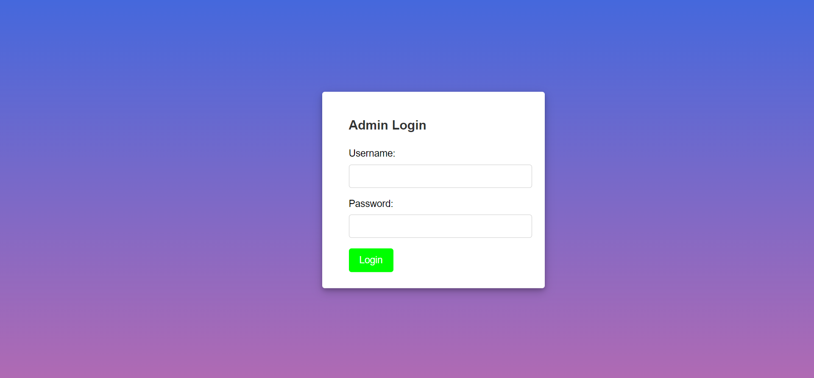
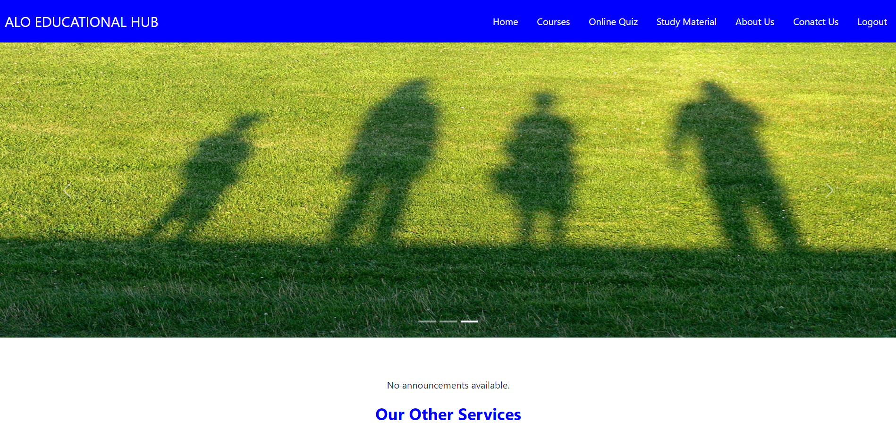
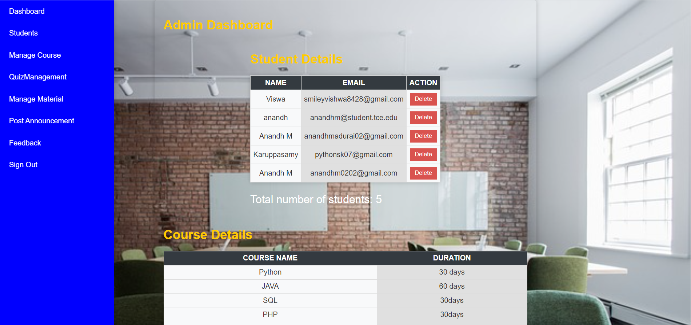

Introduction
Welcome to the ALO Smart E-Learning Platform, a transformative project aimed at connecting students and industry mentors for enhanced learning and skill development. This web-based platform offers an array of features including free study materials, courses, and a Quiz Management system to foster a collaborative learning environment.
The technology stack includes HTML, CSS, Bootstrap, and JavaScript for the front end, and PHP for the back end. MySQL is employed as the database, and tools such as Visual Studio Code and XAMPP server streamline the development process.
Modules
The ALO Smart E-Learning Platform is structured into two main modules: Student and Admin. Let's explore the functionalities of each module in detail.
Student Module
The Student Module prioritizes a seamless user experience, allowing students to register effortlessly by providing basic information such as name, email, and password. This ensures quick and secure access to the platform.
Key Features: User Registration, Course Access, Quiz Participation, Study Material Access, Feedback Mechanism, Security Measures.
Admin Module
The Admin Module serves as the backbone of the ALO Smart E-Learning Platform, providing administrators with robust tools to manage and enhance the platform's overall functionality. Here's a detailed overview of the key features within the Admin Module:
Key Features: Student Management, Course Management, Quiz Management, Study Material Management, Announcement Management, Security Measures.
Student Module
The Student Module of the ALO Smart E-Learning Platform focuses on providing a user-friendly and feature-rich experience for students.
User Registration: Students can easily register on the platform by providing basic information such as their name, email, and password. This ensures seamless access to the various features of the platform.
Course Access: Once registered, students gain access to a variety of courses. They can enroll in courses based on their interests and academic needs, providing them with a diverse and enriching learning experience.
Quiz Participation: The platform offers quizzes as a self-assessment tool. Students can actively participate in quizzes to evaluate their knowledge and track their progress in different subjects.
Study Material: A repository of free study materials is available to students. This collection of resources complements the courses and helps students in further understanding and reinforcing their learning.
Feedback Mechanism: The platform encourages students to provide feedback. This valuable input contributes to the continuous improvement of the platform, ensuring that it caters to the evolving needs of the user community.
Real-time Chat: To facilitate immediate communication, the platform includes a real-time chat feature. This allows students to interact with mentors, fostering effective knowledge sharing and guidance.
Security Measures: The system incorporates email verification and access control to ensure the security of user data, maintaining the integrity of the platform.
Admin Module
The Admin Module of the ALO Smart E-Learning Platform provides administrators with the tools to manage and oversee various aspects of the platform.
User Management: Administrators have the authority to manage student accounts. This includes user removal when necessary, ensuring a safe and orderly platform.
Course Management: Admins can oversee the courses available on the platform. They have the flexibility to add or remove courses as required, ensuring the relevance and quality of the educational content.
Announcement Posting: Administrators can post announcements on the platform. This feature ensures effective communication of vital information to the student community.
Quiz Management: Admins have the ability to manage quizzes. This includes adding new quizzes and removing outdated ones, ensuring the platform's assessments remain relevant.
Feedback Review: Administrators can view and respond to student feedback. This two-way communication allows for addressing concerns and making continuous improvements to enhance the learning experience.
Security Oversight: The admin module plays a crucial role in ensuring the security of user data and maintaining the overall system integrity. It includes features such as email verification and user access control.
Future Expansion: The platform is designed to be open to future enhancements. Plans include the introduction of a chatbot, automated assignment scheduling, and improved communication features to meet evolving educational needs and technological advancements.
